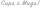

<mat-toolbar>
  
  <span class="alignButtons"></span>
  <div *ngIf="!isLogin()" >
    <button mat-raised-button class="headerButtons" color="primary" routerLink="/auth/login">Login</button>  
    <button mat-raised-button class="headerButtons" color="primary" routerLink="/auth/signup">Sign up</button>
  </div>
  <div *ngIf="isLogin()">
    <button mat-raised-button class="headerButtons" color="primary" routerLink="/cups">Create</button>  
  </div>
</mat-toolbar>